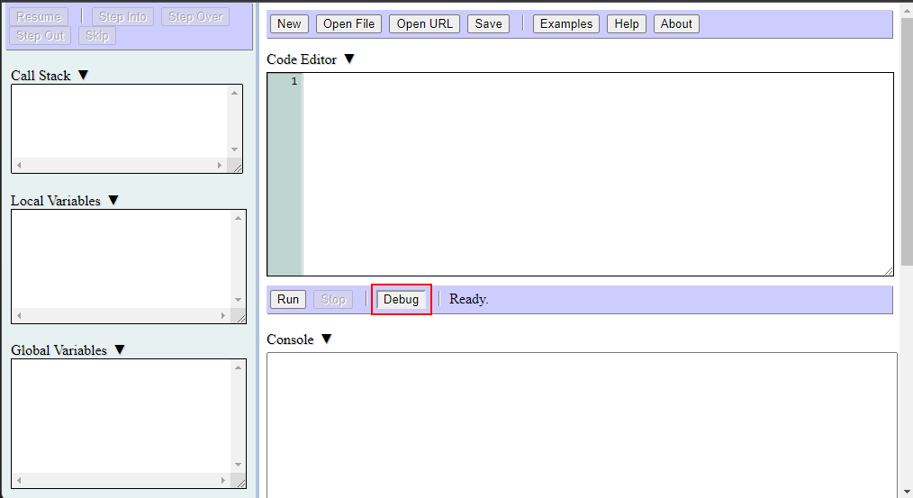
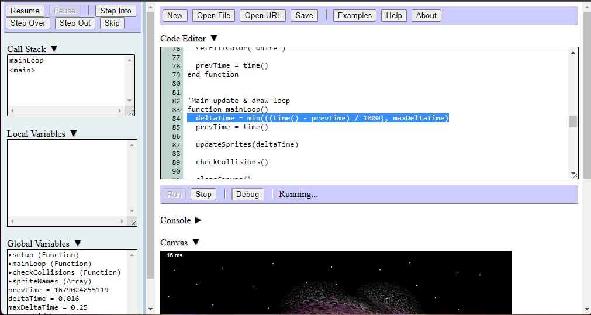

The debugger is a tool that helps find errors in your program. It allows you to pause a program at any point during its execution, step through its source code line-by-line, and view the values of variables and the list of currently called functions. To open the debugger pane, click the button labeled 'Debug' just below the code editor:
If the debugger is opened while a program is currently running, the program will automatically pause its execution and update the variable and call stack displays:
